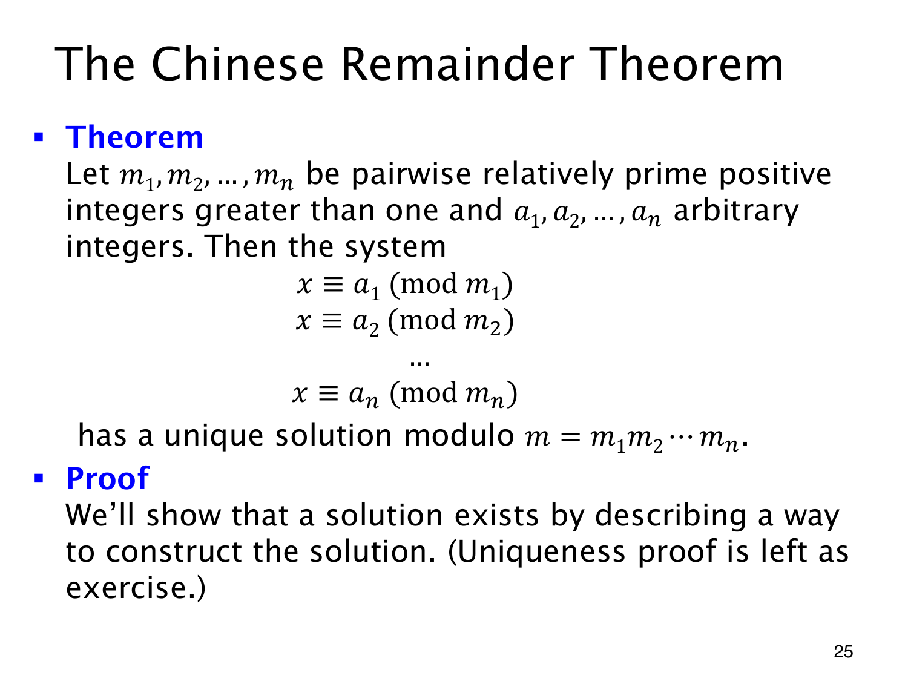

L1.13 · 第 25 页讲解原文
查看这一页课件

中国剩余定理要求两两互素
设 m1,…,mn 都是大于 1 的正整数，而且任意不同的 i,j 都满足 gcd(mi,mj)=1。给定任意整数 a1,…,an，同余组
x≡ai(modmi)(i=1,…,n)
在模 M=m1m2⋯mn 下恰有一个解类。也就是说，0 至 M−1 中有唯一的标准解 r，全部整数解为 r+kM。
“两两互素”不能简化为整体 GCD 为 1。例如 6,10,15 整体 GCD 是 1，但两两之间仍有共同因子，不满足这一定理的条件。
存在性将用构造解来证明。唯一性可从差入手：若 x,y 都满足全部式子，每个 mi 都整除 x−y。这些模数两两互素，素因子彼此不重叠，故乘积 M 也整除差，于是 x≡y(modM)。
模数若不互素，某些条件甚至会冲突，如 x≡0(mod2) 与 x≡1(mod4) 无法同时成立。